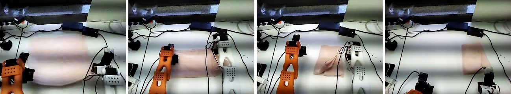
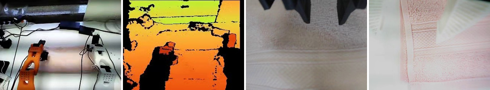

로봇 두 팔이 펼친 수건을 반으로 접고 대문접기까지 하는 단일 정책 · SO-101 양팔 로봇 · 2026-09-30 기준
아래 네 장면은 실제 시연 영상에서 뽑은 것이다. 펼친 수건을 반으로 접고, 이어서 양쪽을 안으로 접어 대문 모양으로 마무리한다.

① 펼친 수건 → ② 반으로 접기 → ③ 양쪽을 안으로 접는 중 → ④ 대문접기 완성
카메라 4대의 영상과 양팔 관절 상태가 ACT 모델 하나로 들어가, 양팔 관절 목표값이 나온다. 아래 화면은 실제 데이터의 한 시점이다.

위에서 본 화면 · 깊이 화면 · 왼쪽 손목 카메라 · 오른쪽 손목 카메라
| 구분 | 내용 |
|---|---|
| 입력 | 카메라 4대(위에서 본 화면, 깊이 화면, 왼쪽·오른쪽 손목) 영상과 양팔 관절 상태 12개, 초당 30프레임 |
| 모델 | ACT. 사람의 시연을 따라 하도록 학습하며, 100스텝(약 3.3초) 분량의 동작을 한 번에 예측 (chunk_size 100, VAE 사용, dim_model 512) |
| 출력 | 양팔 관절 목표값 12개. 예측한 동작을 초당 30번 실행 |
| 의미 | 반접기와 대문접기를 하나의 모델이 이어서 처리한다 |
| 단계 | 개수 | 설명 |
|---|---|---|
| 원본 시연 | 72개 | 원격 조작으로 수집. 각 시연의 동작 단계 경계를 사람이 검수 |
| 조건에 맞는 원본 | 46개 | 반접기와 대문접기를 모두 담고 펼친 상태에서 시작 |
| 복제 포함 에피소드 | 97개 | 조건별로 균형 있게 복제 (원본당 2~3번) |
| 프레임 | 159,084 | 학습 127,514 / 평가 31,570 |
| 학습 / 평가 | 79개 / 18개 | 원본 시연 단위로 분리 (학습 원본 37개, 평가 원본 9개, 겹침 없음) |
| 학습 설정 | 값 |
|---|---|
| 학습량 | 100,000스텝, 배치 8 (데이터를 약 6.3바퀴) |
| 점검 | 10,000스텝마다 평가와 체크포인트 저장. 평가 손실이 다시 오르면 이전 체크포인트 사용 |
| 환경 | 8GB GPU 노트북. 다른 GPU 작업이 끝나 여유 메모리가 생기면 자동으로 시작 |
| 예상 시간 | 약 11~13시간 (배치 8의 실제 속도는 시작 후 확인) |
권장 기본값(ACT 문서: 100,000스텝, 배치 8)을 따랐다. 처음 계획했던 40,000스텝, 배치 4는 데이터를 약 1.25바퀴만 도는 양이어서 늘렸다.
| 위험 | 우려 | 대응 |
|---|---|---|
| 시작 상태가 한정됨 | 펼친 수건에서 시작하는 시연만 학습해서, 구겨지거나 비뚤게 놓이면 실패할 수 있다 | 시험 때 수건을 먼저 펼쳐 놓고 시작하고, 필요하면 펼치기 시연을 추가 |
| 서로 다른 시연이 적음 | 복제본이 같은 영상이라 실제 학습 시연은 37개뿐이다 | 이미지 변환을 매번 다르게 적용하고, 결과를 보고 시연을 더 수집 |
| 오차가 줄어도 성공은 아님 | 학습 손실이 낮아도 로봇이 실제로 잘 접는다는 보장은 없다 | 30회 실제 시험으로 성공률을 측정, 점검에서 성능이 떨어지면 이전 체크포인트 사용 |
| 운영 | 다른 작업과 GPU·디스크를 나눠 쓴다 | GPU 여유를 확인해 시작하고, 실패하면 체크포인트에서 이어서 재시도 |
| 성공률 | 측정 전 / 30회 |
|---|---|
| 반접기 중 실패 | ― |
| 전환 구간 실패 | ― |
| 대문접기 중 실패 | ― |